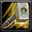
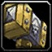
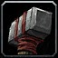

Objectives
Drag to move · scroll or pinch to zoom · M big map. Pins are approximate.

1Beginner's leveling guide · WoW: Forever
Do one step, then press Next Step. The guide remembers where you stopped. New to the game? Read How to Play first.
Drag to move · scroll or pinch to zoom · M big map. Pins are approximate.
Arrow keys ← → also work. Words with a dotted line, like , explain themselves when clicked. The Action Bars tab shows which buttons to have at each level.
Where every spell should go, level by level. The main bar has your Seal, your attacks and your heals, on keys you reach without looking. Extra Seals, help for friends and the tanking buttons go on Shift + number. Blessings, auras and things you only use between fights go on the right bar, to click with the mouse. Hover over or tap a button to see what it does.
In WoW: Forever, Judgement no longer uses up your Seal, so you only cast the Seal again when its 30 seconds run out.
The colour of an item's name tells you how good it is:


Better: much more damage per second, it's slower (great for Seal of Command), and it has Strength. Put it on.
Groups always want healers and tanks, and a paladin can be both. At level 40 your trainer offers Dual Talent Specialization: a second set of talents you can switch to out of combat. Keep your first set as Retribution for questing, and make the second one:
Before level 40 you can still help a group: as Retribution you're damage, but your Flash of Light and Holy Light can save the healer or tank when things go wrong, and everyone gets one of your Blessings. Since a November 2026 hotfix, dungeon kills give 50% more XP, but no XP if someone in the group is 12+ levels higher than the enemies.
Addons are free extras that improve the game's interface. You don't need any, but a few make leveling much easier. The Addons page lists which ones to get (must-have, recommended, optional, and a separate list for dungeons) and how to install them.
Waypoint arrow: with the TomTom addon, click a pin on any Quest Guide map and press Copy /way. In game, press Enter, paste with Ctrl + V and press Enter again. An arrow points the way. /way reset all clears it.
| L | Quest log | M | Map |
| P | Spellbook | N | Talents |
| C | Your character | B | Bags |
| X | Sit down | Y | Legacy (from about level 25) |
From level 10 you get one talent point each level. This is your talent window (N in game), one point at a time: the glowing talent is the one to click at this level. The first 31 points go into Retribution, then 12 into Holy and the last 8 into Protection. Like the Gear tab, it follows your place in the Quest Guide; use Next, the slider or the arrow keys to look ahead. In the game, click Apply Changes after placing the point.
Made a mistake? Any paladin trainer in a big city can reset your talents for a little gold. From level 40 you can also learn a second talent setup (Dual Specialization) at the trainer: make it Holy to heal dungeons or Protection to tank them (see How to Play). With the Talented Legacy perk your points start at level 5 instead of 10: follow the same order, five levels earlier.
Your character window (C in game), filled with the items this guide's quests give you. Like the Action Bars tab, it follows your place in the Quest Guide; move the level slider to look ahead or back. Your own window won't match exactly: dungeon drops, Blacksmithing, the auction house and lucky finds can beat these.
Fan-made guide for World of Warcraft: Forever. Spell icons and maps © Blizzard Entertainment. Icons from the game files; zone maps from Wowhead and the game files.